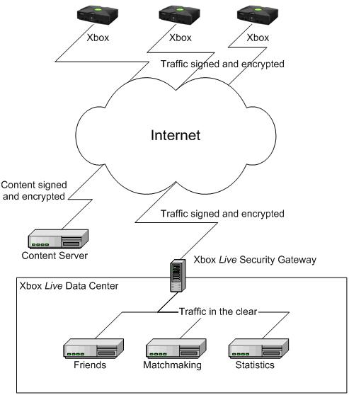
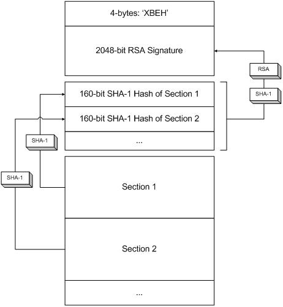
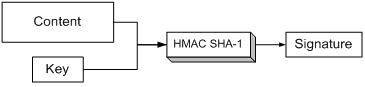

By Pete Isensee, Development Lead, Xbox Advanced Technology Group
The Xbox® video game system from Microsoft® was designed with security as one of the platform goals. A secure console preserves the investments of game developers and publishers by limiting game piracy and protecting game intellectual property (IP). Security also benefits game players by preventing viruses and reducing common forms of cheating such as network packet modification.
However, even a secure game console must provide enough flexibility so that games can create interesting and innovative features. A perfectly secure Xbox would have no memory units, no hard disk, and certainly no network port. It wouldn't be much fun to play games on a perfectly secure Xbox. Providing reasonable security means walking the fine line between enabling great games and protecting game IP and limiting cheats.
This document provides a high-level overview of various security features provided automatically by the Xbox system architecture. The document is not designed to give in-depth technical details, but to provide a foundation for understanding how to extend the existing security mechanisms to protect game IP.
Crackers have a variety of choices when it comes to attacking any game console. One of the easiest things to do is modify the console itself. All a player needs to do is purchase a mod chip and install it. The more significant attacks are those that gain access without modifying hardware. These include attacks on the:
Xbox includes security measures designed to thwart all of these attacks.
Console modifications are an unavoidable part of the console gaming world. Just as some consumers like to tinker with the engine in their car, other consumers like to tinker with gaming hardware. It's usually not feasible to prevent hardware attacks without significantly increasing the cost of the console.
The general philosophy of the Xbox hardware team was that console modifications ("modding" or "chipping") should be made as difficult as possible without adding unnecessary cost. However, there was no illusion that Xbox would never be chipped. In fact, the team was surprised by how long it took before mod chip vendors cracked the box. The first mod chip wasn't commercially available for 6 months after the release of Xbox.
The more important Xbox team philosophy was that modified Xbox consoles should not be able to affect other consoles participating in Xbox Live game sessions. Only legitimate unmodified consoles are permitted to sign in to the Xbox Live service. The detection mechanisms are dynamic. Because the detection uses data from the service and transmits the results back to it for arbitration, the detection phase can be updated to spot new cracking techniques. Xbox Live players are guaranteed that they're playing with gamers on unmodified consoles. Offline games are not required to either detect mod chips or do anything to react to mod chips.
As always, the Xbox team will continue to use all means at its disposal to combat the misuse of intellectual property owned by Microsoft or game developers.
The Xbox network port is a primary entry point for Xbox attacks. All network traffic entering the Xbox Ethernet port is cryptographically authenticated. The network stack automatically ignores any packet that is modified in transit. All game data sent on the network, with the exception of voice chat, is automatically encrypted as well. The Xbox network stack uses the HMAC SHA-1 algorithm for authentication, using the session key as input. Xbox uses DES to encrypt console-to-console and console-to-game server traffic. 3DES (triple-DES) is used for important console-to–Live service traffic like Live sign-up, sign-in, and billing.
To generate secure session keys, Xbox use the Diffie-Hellman (DH) key exchange protocol. The DH algorithm allows every unique pair of communicating Xbox consoles to agree on a secret key without divulging that key to anyone monitoring the network traffic between the pair. Once key exchange is complete, the two endpoints can authenticate and encrypt traffic using the shared key. Even in the unlikely event that a key is cracked, an attacker can only affect a single pair of consoles, since each communicating pair shares a different key. Every time a new connection is established between consoles, DH is used to generate a new unique session key.
All Xbox packets are transmitted using an encapsulated UDP protocol on port 3074. Even though games are permitted to use TCP, TCP is sent on the wire via UDP packets. Restricting the on-wire protocol to UDP eliminates all TCP-style attacks, like SYN floods. All Xbox packets include a sequence number, which allows the receiver to discard duplicate packets.
The network stack also handles malformed packets. It uses secure coding techniques to avoid buffer overruns and other common security problems.
Xbox Live uses the DH algorithm for key exchange between the console and Xbox Live Security Gateways. A Security Gateway (SG) is a device that acts as a firewall between the Internet and an Xbox Live data center. The SG authenticates and decrypts incoming traffic before passing that traffic to other Xbox Live servers. Outbound traffic is encrypted and signed before it enters the Internet. The only type of Live server that can currently reside outside the SG firewall is an Xbox Live content server, because all static downloaded content is already signed and encrypted.

For Live sign-in, Xbox uses the Kerberos protocol to authenticate with Live services. Kerberos authenticates both the Xbox console itself as well as the accounts of any players (up to four per console) signing in to Live. During a successful authentication, the Kerberos protocol grants tickets that allow access to specific service features such as Matchmaking, Stats, or Billing. Tickets grant access to particular services for a short period of time (typically on the order of 24 hours). Although customers may optionally protect their accounts with simple PIN controller-button codes, all Xbox Live users have a strong secure password that is generated at account creation time and stored with their account. The PIN is designed to prevent "little brother attacks"—that is, your kid brother abusing your account. The secure password, not the PIN, is the password used during authentication.
The Xbox controller ports use the USB 1.1 protocol. All Xbox-approved controllers use a subset of the USB protocol with simple signatures that the Xbox USB stack uses to validate input. The USB stack also validates individual elements of the controller data structure to ensure that the game receives data only in allowed ranges.
Unlike the Ethernet port, which by design must accept variable data, the controller ports expect fixed-size packets with a specific format. Packets of invalid sizes and formats are simply ignored by the USB stack. All controller input is reported to the game in a structure with fixed-length data, which also avoids the issue of buffer overruns.
Xbox game discs use a custom format called DVD-X2 media. This format is designed so that Xbox can verify that the disc data represents a published Xbox game. X2 media is signed using public key technology. X2 media is authenticated using SHA-1 digests. The X2 format also includes anti-piracy measures that allow the console to detect copied media. The anti-piracy techniques use a challenge-response mechanism that require the disc to prove its identity. The mechanism uses a combination of SHA-1 and RC4 algorithms. Xbox also addresses piracy in other ways. For instance, game discs must be dual-layer discs, which require expensive and licensed disc pressing equipment.
Game executables (XBEs) are signed using public key technology. When the final version of the XBE is generated at certification time, each of the sections of the XBE is hashed using SHA-1. Each resulting hash value is stored in the XBE header. The entire header (all the hash values, plus other header data) is hashed again using SHA-1. The resulting value is signed using RSA. The final 2048-bit value, called the signature, is stored near the beginning of the XBE header.
When an Xbox loads the XBE, it decrypts the signature using the public RSA key stored in the Xbox ROM. The Xbox verifies the header by performing a SHA-1 hash and comparing the result with the decrypted signature. The console verifies XBE sections when they're loaded by hashing the sections and comparing the resulting hash values with those in the XBE header.

Like the best security techniques, it's simple and uses proven algorithms. The private RSA key resides in a secure vault at Microsoft and is used only at certification time. The public key resides on every Xbox. The likelihood of the private key being broken by a brute force attack on the public key is infinitesimally small. You have a much better chance of being struck by lighting twice, winning the lottery, and discovering the Grand Unifying Theory all on the same day. Finding a brute-force modification to a section that generates the same hash requires an average of 280 attempts—about 19 billion years, if you could generate a new section 1 million times per second.
Included in the XBE header is a flag that indicates what media the XBE is allowed to be executed from. Virtually all games restrict the media to DVD-X2 in order to protect the publisher's IP. However, in some cases demo XBEs are allowed to run from CD or standard DVD for cross-sell purposes.
When it comes to security, the most vulnerable devices are the Xbox hard disk (HD) and Xbox Memory Units (MUs). Neither hard disks nor Memory Units have hardware security mechanisms. Although the HD is protected by an ATA password, the password can be located with some simple hardware probes. The HD can also be accessed via the IDE channel once the Xbox console has unlocked the drive. The Xbox does not provide a secure file system, primarily to maximize performance. By default, when data is written to MUs or the Xbox hard disk, it is neither encrypted nor signed.
It was well understood by the Xbox team that the hard disk would be the primary access point for hackers. In Xbox security specifications written a year before the Xbox release, one engineer wrote: "The most likely attack would be to modify some file that is saved on the MU or the hard drive in such a way that exploits a buffer overrun bug and causes the CPU to jump into malicious code." In many respects it's surprising that it took hackers as long as it did to do exactly what the engineer had predicted.
To address the insecurity of these storage devices, the XDK provides a variety of signing methods for protecting stored data. If games can detect compromised data, they can avoid loading it and in turn avoid compromising the game or the console. Each signing mechanism has tradeoffs that affect both the level of security as well as performance. There are also specific requirements, expressed by Xbox Technical Certification Requirements, about how data stored on the HD and MUs must be signed and authenticated. See the Xbox Content Signing Options and Xbox Security Best Practices white papers for additional information.
On Xbox, most signatures are generated using the HMAC SHA-1 algorithm. This algorithm takes as input an arbitrary amount of data and a single key value. It uses the SHA-1 hash algorithm on combinations of the data and the key to generate a 20-byte digest called a signature. The signature can be attached to the original data file or stored separately. To validate a signature, the game runs the same algorithm on the data being loaded. It compares the stored signature with the computed signature. If the signatures match, the data is authentic. Authentic data has not been modified since it was signed.

There are a variety of signatures that games can use on MU and HD content, each with security and usability tradeoffs.
Content signed with a roamable signature can be loaded and authenticated on any Xbox console. The only content that is permitted to be signed with roamable signatures is user data (save games and profiles). The key used to generate a roamable signature is a game-specific key that resides on the game disc. The drawback of roamable signatures is that they are not very secure. Good security relies on the security of the key. If the key is compromised, the security is compromised. There are two problems with roamable signatures. The first is that the key is easily discoverable, since it resides on the game disc (or in memory if the game is loaded). The second problem is that the key is the same on every single copy of the title. Once attackers have this key, they can create their own content, sign it with the key, and any Xbox with the same game will happily authenticate the new content.
This is exactly what happened with the well-publicized 007: Agent Under Fire save game cheat. Many outside observers assumed this problem was the result of 007 not signing save games properly, but that was not the case. The attacker simply generated new content and re-signed it using HMAC SHA-1 and the roamable 007 title key. The new content took advantage of a buffer overrun in the 007 save game loading code to execute malicious code.
In other words, roamable signatures protect against cosmic rays, file write errors, and hacker wannabees, but offer no real protection against a dedicated attacker.
Content signed with a non-roamable signature can be authenticated only on the Xbox console that originally signed the content. Non-roamable signatures lock content to a single console. The key used to generate a non-roamable signature is a combination of a game-specific key and a per-Xbox key that's different on every Xbox console. The advantage of non-roamable signatures is that even if an attacker discovers the keys, the keys can't be used to sign content that will validate on a different Xbox console. However, an attacker could create a tool that other users could run to extract the keys and re-sign custom content for their console. In other words, non-roamable signatures present more hurdles for hackers—but not insurmountable hurdles.
Non-roamable signatures are great for many types of content, including downloaded content and cached data. However, content that is designed to be shared or transmitted to other consoles cannot be non-roamable. That includes saved games on MUs, data that is uploaded to Xbox Live for distribution to other players (for example, game clips), or data designed to be shared with other Live consoles.
An Xbox Live signature is a special type of signature. Just like an offline signature, a Live signature is based on HMAC SHA-1. The difference with an Xbox Live signature is the key. Whereas offline signatures use keys that reside on the game disc or console, Xbox Live keys come from the Live service. Xbox Live signatures also include additional information, such as time and date of issue, console identifier, and the IDs of the players signed into the service when the data was originally signed.
Unlike roamable keys, each Live key is unique and difficult to discover, since it only resides in memory for a single Live session. Unlike non-roamable keys, Live keys are granted only to authenticated, unmodified Xbox consoles, because they are granted only after a successful Live sign-in. This makes Xbox Live signatures extremely difficult to forge. The disadvantage of these signatures is that they can be used only when the player is signed in to Xbox Live.
Like any security mechanism, Live signatures are not a perfect solution. Because the key resides in Xbox memory, it is discoverable. The advantage of Live signatures is that even if an attacker manages to find the key and re-sign content properly, the content can still be revoked on either a per-user or per-console basis.
Xbox Live signatures are required for any content destined to be uploaded from an Xbox console to the Live service. At the time of this writing, that includes attachments for statistics, but it may involve other forms of content in the future. Xbox Live signatures are also required for any content transferred from an Xbox console to another Xbox console's hard disk. Live signatures are recommended for any content when the security of that content is critically important. For instance, if your game writes content with intellectual property that you must protect, or you want to have save games that are both roamable and not susceptible to cracking, you can use Live signatures.
Xbox Live–enabled games present a thorny security problem, because a security hole in a game can affect thousands of players. To address this issue, Xbox Live games can be updated after they have been released through a mechanism called Autoupdate. During Live sign-in, the game informs the service of its version number. If the version number is old, Live declines the sign-in request and requires that the game be updated (or that the user play offline). During the update process, the most recent version of the game is downloaded from Live. The update package is a delta-compressed version, so it's typically quite small. Like an XBE, the package is signed with a combination of RSA and HMAC SHA-1 signatures. The update is stored on the Xbox hard disk. At game boot-up, the Xbox system software automatically looks for the XBE first on the hard disk, validates the integrity of that XBE, and launches it. If there's no XBE on the hard disk, it loads the XBE from the game disc.
Autoupdates have the same level of security as XBEs that reside on the game disc, because they are signed with public key technology. At no time is the private key ever available to a hacker, and the only known method of attacking RSA is a brute force attack that requires billions of years of computing time.
Content packages downloaded from Xbox Live are signed with RSA keys. After the content package has been downloaded and verified, it is decompressed and signed with a non-roamable signature. Technically, SHA-1 digests of individual files (or file blocks) are computed and stored in a metadata file, and the metadata file is signed with a non-roamable signature. Therefore, downloaded content has the same security level as other non-roamable content.
Xbox uses the following industry standard algorithms and key sizes for encryption, authentication, and key exchange. Detailed information about these algorithms can be found both online and in standard cryptographic texts.